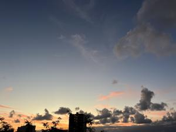

うるがいの話 ある日
最新: ピザハウス新本店【うるがいの話 ある日】とは 一日だけのプログです
『うるがいの話』の最新一日だけのプログで、通信料が少なく経済的だ。カニの画像をクリックすると全ての日付が載る『うるがいの話』サイトを表示します
|
|
【うるがいの話】 うるがい(ｳﾙｶﾞｲ urugai)とは、『もずくがに』の名前でとても大きくなります。 |
|---|---|
|
|
【カミマヤーの話】 猫のことを方言でマヤーといいます。カミマヤー（kamimayaa）とは、神の猫のことです。 |
|
【たながぁの音楽】 たながぁ（ﾀﾅｶﾞｰ tanagaa）とは手長えびのことで、何種類かあり大きいのは車 エビぐらいになります。 |

|
【ぶながぁの話】 ぶながぁ(ﾌﾞﾅｶﾞｰ bunagaa)とは、赤い髪の毛、赤い身体、そして身長は１ｍ２０ｃｍ ぐらい、川の蟹を食べているの目撃された。場所は沖縄県国頭郡大宜味村のと ある村僕の隣近所に住んでいる爺さんから、聞いた話です。 |
|
|
【ギーマの話】 ギーマ(giima)とは、山原の里山に咲くスズランに似た、 花を付けます。実は食べられます、 気が付くと口の周りが紫になっています。 |
2023年10月15日 (日）ピザハウス新本店
15:05


座波建設：入社２年生の頃、大阪から数回この建物４階にマシンの保守作業で
訪れた。進行中のプロジェクト責任者を、書面で変えて欲しいとの要望書を私
のトレナーから、見せてもらった。私はのトレナーは、その責任者の交代とし
て責任者になったのだった。関係会社の人と、近くにあるイバノまで歩いて食
事をした。あるとき、深夜の保守作業を一人で任されたものの、上手くいかず
深夜１時ごろ、大阪のトレナー鈴木さんの家に電話した、奥さんが電話にでて
トレナーに変わっった、『失敗しました』とトレナーに報告した。大阪から飛
行機での出張、宿泊は久米に住んでいた妹達のアパートに泊まり、座波建設へ
はバスで移動した思い出のある場所である。ピザハウス新本店は、ここの近く
に移転していたのだ。一緒に食事をしたコドモのトモダチの家族に、座波建設
へは何回か訪れたことがありますと、話したところ、トモダチのお母さんが私
は、そこの２階に会社の事務所があり、２年ほどそこで仕事をしていました。
ホー、さらにトモダチのお母さんのお母さんは、大宜味村出身で隣の部落の郵
便局の近くに家があったと、ホー。いろいろと話は進み、テルヤ ソウ一知っ
ていますか？、ん、もしかしてラッパを吹きますか・・・、トモダチの同級生
のお父さんらしい。こうして、１１時４５分から１４時までコロナが始まって
依頼、私の最初の外食は終った。某信販会社は、同期のオギが担当していたが
、その後マシンがＩＢＭにかわり、うちのマシンは引き上げることになった。
当時、沖縄に戻って働いていた私が、カスタマーエンジニアのアカミネさんと
一緒に可動式の磁気ディスクを座波建設から、久茂地にある琉球リース総合ビ
ルへ持っていった。
１５時